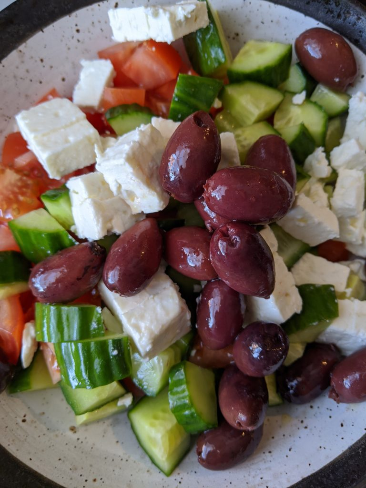
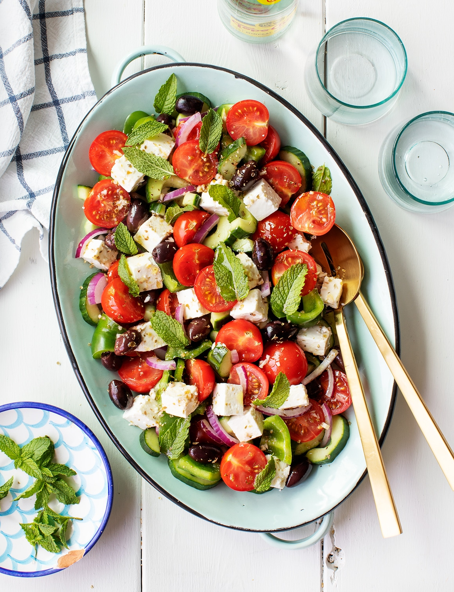
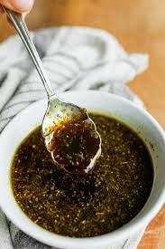
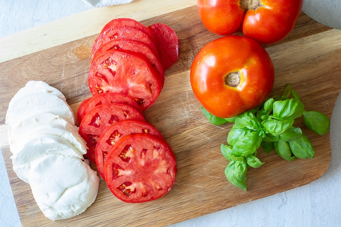
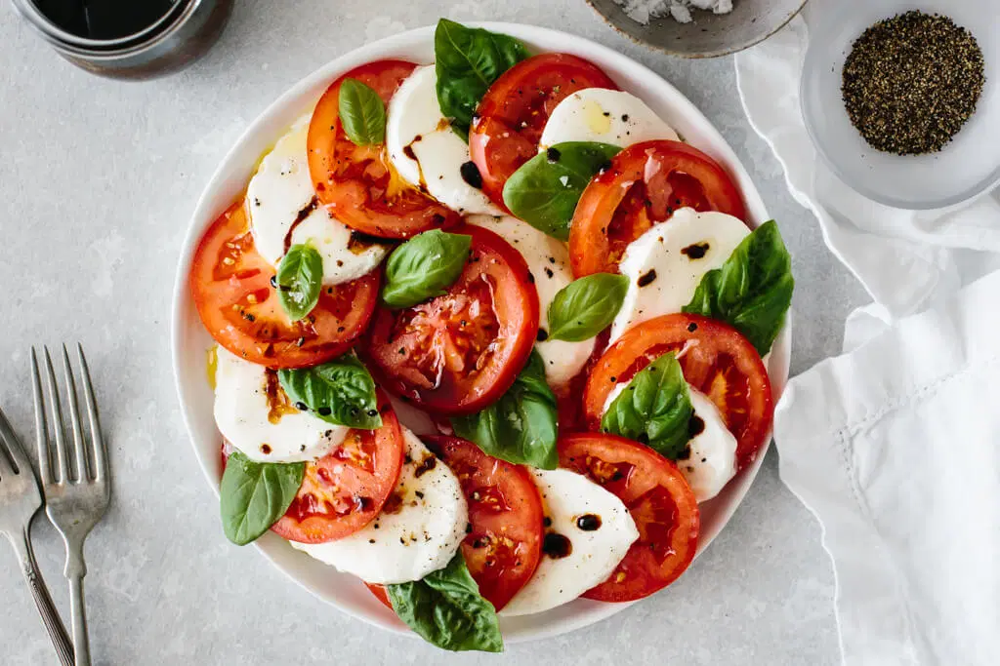

In a small bowl, whisk together 1/4 cup red wine vinegar and 2 tablespoons of honey.
Add the sliced red onions and allow them to sit for at least 15 minutes. Drain well before adding to the salad.
Rinse the romaine hearts under cool running water. Wash the surface and between the leaves to remove any dirt and debris.
Shake well to remove moisture and dry using clean towels. Chop the lettuce into about ¾-inch pieces yielding about 8 cups.
In a large bowl, add the lettuce. Top with cucumbers, tomatoes, green bell pepper, drained red onions, kalamata olives, and feta cheese.
In a medium bowl, whisk together red wine vinegar, lemon zest, lemon juice, dijon mustard, 1 teaspoon honey (if using), minced garlic, oregano, salt, and pepper.
Slowly drizzle the olive oil into the dressing mixture, continuously and vigorously whisking until you achieve a thickened dressing—season with salt and pepper to taste.
If not serving right away, whisk again right before adding to the salad as it may separate over time.
Right before serving, drizzle half of the dressing over the salad, gently toss to coat. Serve the remaining on the side. Garnish with more vegetables and cheese as desired.


Caprese Salad
Caprese salad is a simple Italian appetizer with ripe juicy tomatoes layered between thick slices of fresh mozzarella and fragrant basil leaves.
Ingredients:
3 tomatoes, about 3-inches in diameter
1 pound fresh mozzarella, about 3-inch sized mozzarella balls
1 cup balsamic vinegar
2 tablespoons honey
12 large basil leaves
extra-virgin olive oil, for drizzling
kosher salt, for seasoning
black pepper, for seasoning
Instruction
Add balsamic vinegar and honey to a small saucepan, stir to combine. Bring to a boil and then reduce to a simmer over medium-low heat with some bubbling.
Reduce the sauce to about ¼ to ⅓ cup, about 20 to 25 minutes.
Allow balsamic reduction to slightly cool. It should have a maple syrup consistency.
The reduction will thicken as it cools, if needed add some warm water and heat over low to make the sauce less thick. For a thicker sauce reduce to ¼ cup.
Cut mozzarella into 12 slices, about ¼-inch in thickness.
Cut tomatoes into 12 slices, about ¼-inch in thickness
Arrange tomatoes, mozzarella, and basil leaves, overlapping on a platter.
Drizzle with olive oil, salt, and pepper.
Drizzle salad with balsamic reduction, or serve on the side.



Cob Salad
Cobb salad is an American low-carb entree made with fresh produce, various proteins and tossed in a tangy red wine vinegar dressing.
10 cups romaine lettuce, cut into 3/4-inch pieces, about 3 hearts
1 cup baby tomatoes, halved
½ cup red onion, thinly sliced
1 large avocado, sliced or cubed
1 tablespoon chopped chives
2 ounces blue cheese, about ½ cup
¼ cup red wine vinegar
1 tablespoon dijon mustard
½ cup olive oil
1 tablespoon minced shallots
Instruction
Hard Boiled Eggs
Fill a large pot with enough water to cover the eggs by 1-inch once added. Bring to a boil at 212°F (100°C),
then carefully place the eggs inside. Cook for 30 seconds, then place the lid on and reduce heat to low.
Cook on a low simmer for 12 minutes.
In a medium bowl, add ice and cold water. Once the eggs are done, immediately transfer them to the ice bath
to chill for 15 minutes. Afterward, crack the sides of the eggshell, peel, and cut each in half lengthwise.
Chicken
Seasonings: In a small bowl, combine 1 teaspoon kosher salt, ½ teaspoon black pepper, and paprika.
Prep: Cut each piece of chicken in half horizontally. This should create four ½-inch thick pieces.
Evenly season both sides of the chicken with the seasoning mix.
Alternatively, place one of the chicken pieces between two plastic sheets or in a large plastic bag.
Flatten to an even thickness, about ½-inch thick. Repeat with the remaining piece.
Cook: In the same pan used to fry the bacon, cook the chicken. Heat the pan over medium heat.
Once hot, add the chicken. Cook until golden brown, about 5 minutes. Flip and cook until the internal temperature reaches 165°F (74°C),
about 3 to 5 minutes. Transfer to a clean plate to cool. Slice crosswise into strips, or cut into cubes.
Alternatively, use a large clean skillet with 1 tablespoon of olive oil.
Lettuce
Chop the lettuce into about ¾-inch pieces yielding about 10 cups. Transfer to a salad spinner, rinse with cold water, and dry.
Arrange tomatoes, mozzarella, and basil leaves, overlapping on a platter.
Salad Dressing
In a medium bowl, whisk the red wine vinegar, dijon mustard, ½ teaspoon salt, and ¼ teaspoon pepper.
Slowly drizzle in the olive oil, continuously whisking until a thickened dressing is formed.
Add the minced shallots and whisk to combine. Season with salt and pepper to taste.
Serve
In serving bowls or on a large platter, evenly portion out the lettuce. Top with the sliced eggs, chicken, bacon, tomatoes,
red onion, avocado, chopped chives, and blue cheese. Cover and refrigerate if not eating immediately. Drizzle dressing on top or serve on the side.